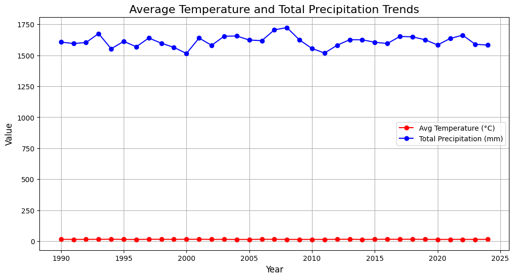

How does Climate Change affect Agriculture
Background
As global temperatures rise and precipitation patterns change, agricultural practices are forced to adapt. Understanding how climate and adaptation strategies impact crop yields and economic outcomes is crucial for mitigating the effects of climate change on food production. By analyzing how different regions are responding to climate variability, we can identify successful strategies that could be applied globally to ensure food security.
The data source
This dataset includes agricultural data from 1990 to 2024, covering a wide range of crops, countries, and regions. It tracks factors like temperature, precipitation, CO2 emissions, crop yields, and economic impacts. Size of Data: The dataset contains 10,000 records across 10 countries, with 10 attributes per entry, including crop types, climate data, and adaptation strategies.
Attributes
- Year (1990 - 2024)
- Country
- Crop Type (barley, coffee, corn, cotton, fruits, rice, soybeans, sugarcane, vegetables, wheat)
- Average Temperature (°C)
- Total Precipitation (mm)
- CO2 Emissions (metric tons)
- Crop Yield (metric tons per hectare)
- Extreme Weather Events (0 - 10)
- Irrigation Access (0 - 100)
- Pesticide Use (kilogram per hectare)
- Fertilizer Use (kilogram per hectare)
- Soil Health Index (0 - 100)
- Adaption Strategies (crop rotation, drought-resistant crops, organic farming, water management, no adaptation)
- Economic Impact (in million USD)
Global Overview of Climate Change and Agriculture
This can be done in a number of ways. We basically just want to show the trends of the data to show viewers what's going on. We could start with showing AVG TEMP AND AVG PERCIPITATION from beginning of data to most recently
Average Temperature and Total Precipitation Trends

Show rise in extreme weather events and CO2 emissions. This would then give context to the below visualizations as viewers would see a strong correlation between increase in extreme weather and emissions and a decrease in crop yield.
Rise in Extreme Weather Events and CO2 Emissions

Global Crop Yield Over Time
.png)
Temperature on Crop Yield
.png)
Impact on Crop Yields
Compare how different crop yields (3 top crops, rice wheat corn, other combo) over time. It shouldn't be a straight line, but it should def decrease over time.
Crop Yield Trends Over Time for Top Crops

How have some regions done better and some done much worse as weather patterns change over time. Inevitably, the varying weather will lengthen some growing seasons and shorten others. Show this in a visualization.
Country Crop Yields Over Time

Adaptions Strategies in Action and their Results
Show where different adaption strategies are being implemented. The different strategies will depend on what the changing weather in messing up. We can then compare/analyze how well they have worked to mitigate effects of changing climate.
Effectiveness of Adaptation Strategies

Economic Costs
Now let's see the economic impact on regions that did implement adaption strategies vs those that did not. Would be super cool to implement some kind of COST-BENEFIT ANALYSIS of different strategies that worked and then their impact on productivity/economy to see if they are worth while solutions, etc.
Economic and Productivity Impact: With vs Without Adaptation

Effects of Modern Technology
Would be potentially interesting and important to draw attention to how access to IRRIGATION, FERTILIZER, PESTICIDES, etc affects crop yields. We would probably find that countries with better access to more modern tech would have an easier time mitigating affects of climate change.
This could then support a suggestion/solution for our findings. For example, if we are able to show that access to modern tech in a key piece of mitigating crop yield decline. Then we could propose global policy to address spreading successful adaption strategies to countries that do not have access atm. On the other hand, if we find that modern tech has no positive outcomes (unlikely, but possible), we could draw a narrative that humanity has doomed itself and then propose how the world has to work together or whatever to stop emissions (elect better politicians, write to local gov, become activits, etc).
Plot showing that technology (within our dataset) doesn't necessarily contribute to crop yield differences.
Crop Yield Trends: Advanced vs Least Advanced Countries

Regional Examples
This is where we could end on a positive where we could exemplify where specific places have had success implementing adaption strategies and maintaining yields and boasting a strong economy. This could come from look at patterns over time like if a country/region had been hit by a tsunami the year before, how have water management systems managed to restore some of the crop yield after previous devastation.
This plot shows that in the USA, adaptation strategies do not impact economic impact but they might impact crop yield.

In contrast, these show that adaptation strategies might not really contribute much to crop yield


Here are a few 2024 Global Mapping Plots
.png)
Crop Yield by Country (Global Map)
.png)
Total (Summed) Temperature Change Global Map
.png)
Continuing the search of 'does this directly contribute to crop yield' , this shows pesticide and fertilizer use don't vary much between these countries, whereas crop yield really varies. Therefore, pesticide and fertilizer are not very assiciated with crop yield within our dataset.

This model (below) shows that in our dataset the countries with highest vs. lowest technology did not have much difference in climate risk, indicating that either technology does not have a big impact on climate risk inherently or that our countries don't have enough technological range in order to prove a significant difference in climate risk..

Climate Risk and Crop Yield by Year
.png)
.png)
Click the button below to access the interactive plot